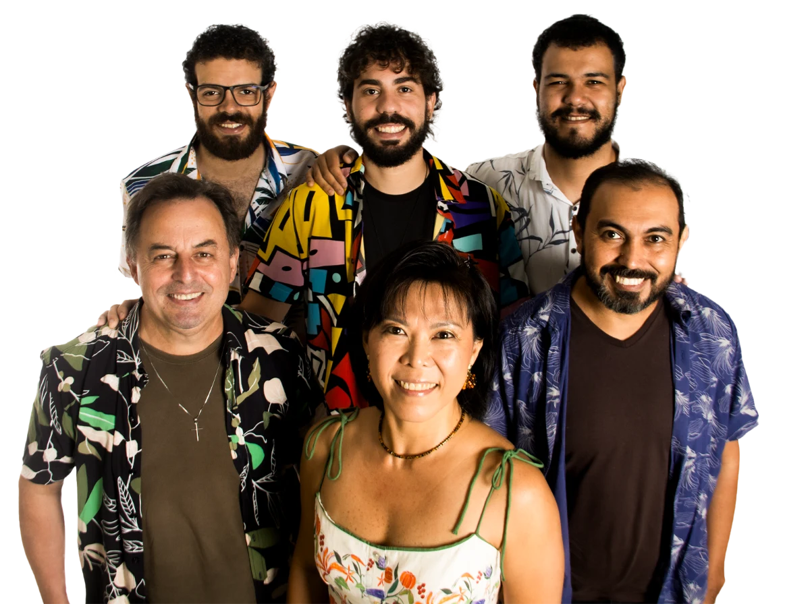

Em breve
Forrodiando
Banda de forró de Dourados, Mato Grosso do Sul. O site oficial está em construção e vai reunir agenda de shows, portfólio e contato.

Banda de forró de Dourados, Mato Grosso do Sul. O site oficial está em construção e vai reunir agenda de shows, portfólio e contato.
